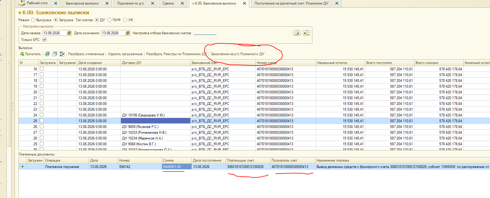
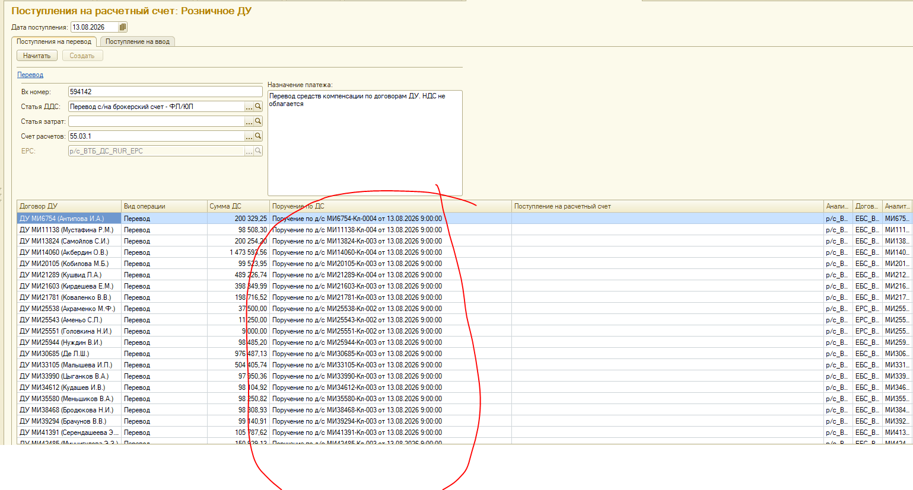
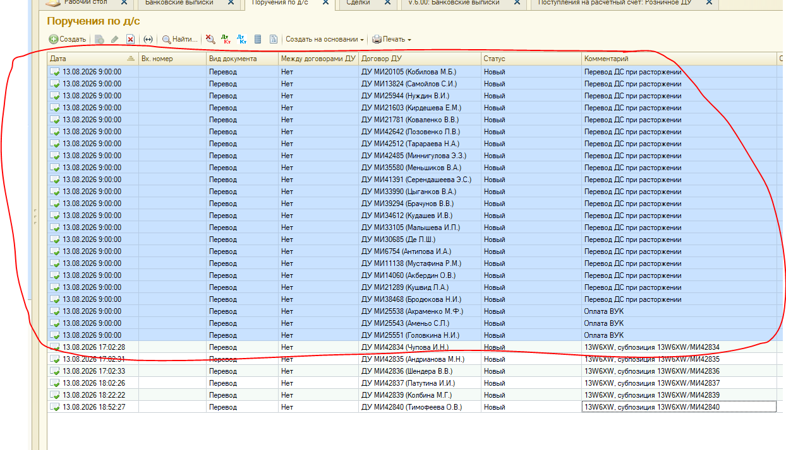
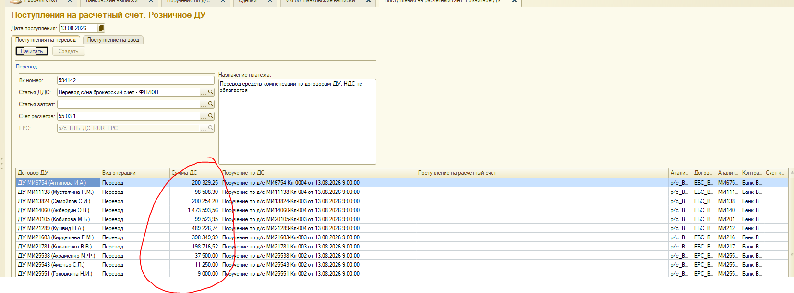
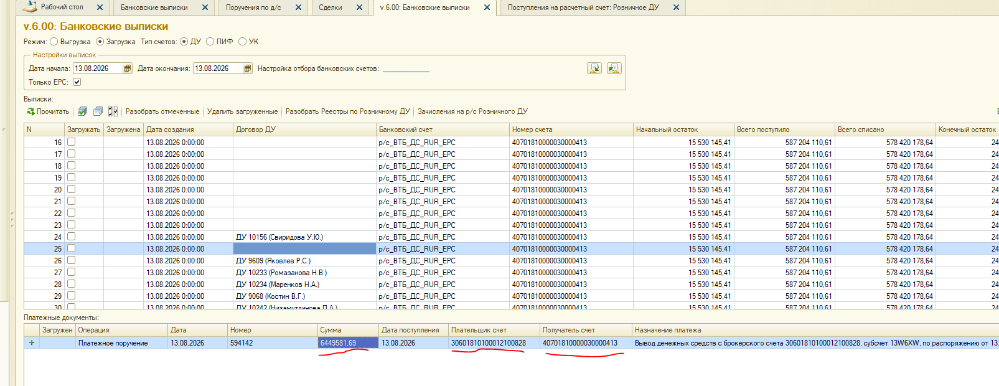
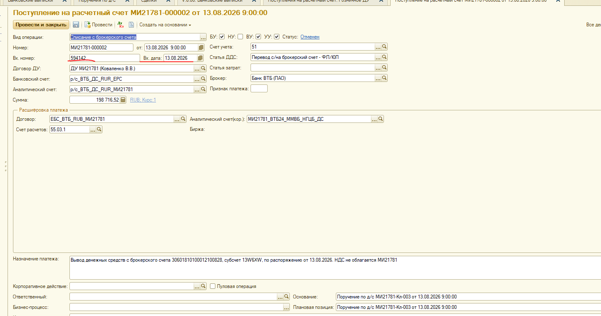

IMDEV-9202 / IMAPPS-38786. Источник: ТЗ «Поступления на расчетный счет РДУ.docx» + код обработок.
С брокерских счетов клиентов РДУ на расчетные счета деньги уходят одной суммой за все договоры. В Аванкоре эту сумму нужно разложить на отдельные документы Поступление на расчетный счет с видом операции Списание с брокерского счета — по одному на каждый договор. В отдельные дни таких документов может быть порядка 20 000 (по числу действующих договоров РДУ).
Сценарий ТЗ. Форма вашей обработки открывается в самом конце и в работе почти не участвует.
| Кто | Кого вызывает | Когда |
|---|---|---|
| Банковские выписки | TIBCO (SOAP) | кнопка «Прочитать» |
| Банковские выписки | ваша EPF ПоступленияНаРасчетныйСчет_РозничноеДУ | кнопка «Зачисления на р/с Розничного ДУ», до открытия формы |
| Ваша EPF | Документ.Поручение (чтение) | ПорученияПоДС |
| Ваша EPF | Документ.ПоступлениеНаРасчетныйСчет (создание/проведение) | СоздатьПоступленияДС, только если суммы совпали |
| Ваша EPF | TIBCO | никогда |
| Оплата КЗ по клиентам РДУ | Документ.Поручение (создание) | отдельный процесс раньше; из выписок не вызывается |
Ниже шаги как в ТЗ. На каждом шаге: что делает пользователь и что в этот момент делает обработка. В авторежиме шаги 2-6 происходят внутри одного нажатия кнопки; скриншоты показывают промежуточные состояния.
Что делает пользователь
v.6.00: Банковские выписки).40701810000030000413 (на скриншоте строка 25, счет р/с_ВТБ_ДС_RUR_EPC).30601810100012100828, получатель 40701810000030000413.
ЗачисленияНаРСРозничногоДУ
формы внЗагрузкаВыписокДУ, та на сервере запускает
ЗачисленияНаРСРозничногоДУ() модуля объекта.
Дальше обработка сама ищет нужную строку платежа, подключает внешнюю обработку
ПоступленияНаРасчетныйСчет_РозничноеДУ, начитывает поручения, сверяет суммы и при совпадении создает документы.
Пользователь больше ничего не выбирает вручную — это один серверный вызов.
Что видит пользователь
р/с_ВТБ_ДС_RUR_EPC. Счет расчетов: 55.03.1. Статья ДДС: перевод с/на брокерский счет.
ПоступленияНаРасчетныйСчет_РозничноеДУ: обработка выгружается во временный файл,
создается объект, подставляются сохраненные настройки (пул, ЕРС, статьи, счет расчетов, контрагент НДФЛ).
ЕРС дополнительно ищется по номеру счета получателя из строки выписки.
Параметр ЭтоЗачисленияНаРСРозничногоДУ = Истина передается в форму:
дата, входящий номер и назначение платежа берутся из выписки, кнопка Создать блокируется.
Ручной путь другой: пользователь сам жмет Начитать (ПорученияПоДС(Перевод)), затем Создать
(СоздатьПоступленияДС(Перевод)), если заполнен входящий номер.
Что должно попасть в отбор (по ТЗ)
| Условие ТЗ | Как должно работать | Как в коде сейчас |
|---|---|---|
| Вид документа | Перевод (ВидыОперацийПоручение.Перевод) |
Есть: параметр ВидОперации |
| Договор ДУ | Только пул Розничное ДУ | Есть: соединение с ДоговорДУ.Пул = &Пул |
| Статус | Новый | Есть: срез ИсторияСтатусовОбъектов, статус Новый |
| Комментарий содержит | Перевод ДС при расторжении, Оплата ВУК, Оплата НДФЛ |
Нет фильтра по комментарию. Берутся все подходящие переводы пула |
| Еще не закрыто поступлением | Нет проведенного поступления с этой плановой позицией | Есть LEFT JOIN по ПлановаяПозиция, но у реквизита нет индекса |
| Счета | Источник = аналитический счет ДС торгового кода, приемник хранится на ЕРС | Есть для вида Перевод |
На скриншоте журнала поручений красным обведена пачка документов от 13.08.2026 9:00:00: вид Перевод, статус Новый, комментарии как в ТЗ. Это исходник для начитки, обработка их не создает.

ПорученияПоДС(Перевод).
Запрос кладет строки в табличную часть ПорученияПоДС: договор ДУ, поручение, сумма ДС,
аналитический счет приемника, контрагент / договор / счет контрагента, аналитический счет плательщика, номер ДУ.
Строки в форму добавляются циклом Выборка.Следующий() / Добавить(), без Загрузить().
Эти поручения заранее создает другая обработка — Оплата КЗ по клиентам РДУ
(комментарии Оплата ВУК / Оплата НДФЛ).
13W6XW, субпозиция ... на том же скриншоте в ТЗ в отбор не входят.
Из-за отсутствия фильтра по комментарию в запросе они могут попасть в начитку, если совпали пул, статус и счета.
Что видит пользователь

ПорученияПоДС.Итог("СуммаДС")
и сравнивает со суммой найденной строки выписки строго на равенство.
Если суммы разошлись или сумма нулевая — документы не создаются, в форму уходит текст ошибки.
Если JOIN в запросе размножил строки (несколько торговых кодов или начислений НДФЛ на договор),
итог завышается и сверка с выпиской не проходит.
Что видит пользователь (нижняя таблица «Платежные документы» той же выписки):
| Поле на скриншоте | Значение из ТЗ (13.08.2026) | Роль |
|---|---|---|
| Операция | Платежное поручение | строка выписки |
| Номер | 594142 | станет входящим номером всех поступлений |
| Сумма | 6 449 581.69 | сверка с автосуммой поручений |
| Плательщик счет | 30601810100012100828 | ключ поиска (брокерский счет) |
| Получатель счет | 40701810000030000413 | ключ поиска (ЕРС клиентов РДУ) |
| Назначение платежа | Вывод денежных средств с брокерского счета 30601..., субсчет 13W6XW, по распоряжению от ... | вторая часть поиска (подстрока) |

НайтиСТрокуВТЧ_ПлатежныеДокументы
отбирает строки ТЧ ПлатежныеДокументы по счетам, затем в цикле ищет подстроку назначения
без учета регистра. Для переводов зашито:
Вывод денежных средств с брокерского счета 30601810100012100828, субсчет 13W6XW
40702810116000014928,
назначение «Перевод средств компенсации по договорам ДУ. НДС не облагается»,
вид поручения ВводВДУ, вид поступления Прочее поступление.
ТЗ IMDEV-9202 описывает только первый сценарий (списание с брокерского счета).
Что получается на выходе (пример из ТЗ: документ МИ21781-000002):
| Реквизит поступления | Откуда берется | Пример |
|---|---|---|
| Вид операции | фиксировано для перевода | Списание с брокерского счета |
| Дата документа | дата поступления + 9 часов | 13.08.2026 9:00:00 |
| Вх. дата | дата строки выписки | 13.08.2026 |
| Вх. номер | номер платежки, один на все документы | 594142 |
| Договор ДУ | из поручения | ДУ МИ21781 (Коваленко В.В.) |
| Банковский счет / ЕРС | настройка обработки | р/с_ВТБ_ДС_RUR_EPC |
| Сумма | СуммаДС поручения | 198 716.52 |
| Счет учета | фиксировано | 51 |
| Счет расчетов | настройка | 55.03.1 |
| Статья ДДС | настройка | Перевод с/на брокерский счет - ФЛ/ЮЛ |
| Назначение платежа | текст выписки + код договора ДУ | ... НДС не облагается МИ21781 |
| Основание / плановая позиция | поручение по д/с | МИ21781-Кл-003 от 13.08.2026 9:00:00 |
| Учеты | фиксировано | БУ, ВУ, УУ включены |

СоздатьПоступленияДС(Перевод) в цикле по каждой строке
ПорученияПоДС вызывает Поступление():
ПроверитьЗаполнение() (ошибка заполнения сейчас не останавливает проведение);| Из банковской выписки (как в ТЗ) | Вручную из формы обработки | |
|---|---|---|
| Кто стартует | Кнопка «Зачисления на р/с Розничного ДУ» | Кнопки «Начитать» и «Создать» |
| Поиск строки выписки | Да, по счетам и назначению | Нет |
| Сверка автосуммы | Да, строгое равенство | Нет, создает все начитанные строки |
| Вх. номер / дата / назначение | Из платежки выписки | Пользователь вводит сам (вх. номер обязателен) |
| Кнопка «Создать» после открытия | Заблокирована | Доступна |
| Файл | Что на кадре | Шаг |
|---|---|---|
| image1.png | Банковские выписки, кнопка запуска, платежка 594142 | 1 |
| image2.png | Форма обработки РДУ, вкладка «Поступления на перевод» | 2 |
| image3.png | Журнал поручений: Перевод / Новый / комментарии ВУК, НДФЛ, расторжение | 3 |
| image4.png | Колонка «Сумма ДС» — источник автосуммы | 4 |
| image5.png | Ключи поиска в выписке: сумма, счет плательщика, счет получателя | 5 |
| image6.png | Готовое поступление: один вх. номер и вх. дата на пачку | 6 |
По коду, без замера на базе. Как отличить на тесте: отдельно «Начитать» и отдельно «Создать».
| # | Где | Когда проявляется | Почему по коду | Как ускорять |
|---|---|---|---|---|
| 1 | Проведение в Поступление() | Суммы совпали, документы реально создаются. Основной сценарий ТЗ. | Цикл по каждому поручению: СоздатьДокумент, УстановитьНовыйНомер, ПроверитьЗаполнение, Записать(Проведение) с БУ+ВУ+УУ. Отдельная транзакция на документ. До ~20 000 проведений в одном серверном вызове. | Параллельные фоновые задания по образцу регламентов Аванкора (см. ниже). |
| 2 | Запрос ПорученияПоДС | Всегда до создания. Если суммы не совпали — пользователь видит только это ожидание. | JOIN ко всем поступлениям по ПлановаяПозиция без индекса; JOIN к НачислениеЗадолженности и ТорговыеКоды размножает строки; нет периода и фильтра по комментарию; СрезПоследних статусов; результат кладётся в ТЧ построчно Добавить(). | НЕ СУЩЕСТВУЕТ вместо JOIN, индекс на ПлановаяПозиция (или связь через ДокументОснование), убрать лишние JOIN для вида Перевод, фильтр по комментарию и дате, Загрузить() вместо цикла. Параллельность запрос не лечит. |
| 3 | Копирование строк в форму | После возврата с сервера, форма уже открывается. | Клиентский цикл Добавить() тысяч строк из ТЧ выписок. | Не открывать форму на 20 000 строк, отдать итог/лог, заполнять ТЧ на сервере целиком. |
| 4 | TIBCO / Прочитать | Другая кнопка. К зависанию «Зачисления на р/с» не относится. | SOAP AMAPTIBCO:8890. | Не трогать в IMDEV-9202. |
Новый «один договор = одно фоновое» из старых регламентов Аванкора не копировать. Для 20 000 поступлений это тот же антипаттерн, который в IMDEV-8663 уже убрали. Берём диспетчер чанков из 8663.1: скользящее окно потоков + порция договоров на задание + барьер в конце.
| Роль | Где в 8663 / Аванкоре | Как применить в 9202 |
|---|---|---|
| Число одновременных ФЗ | Константа МаксимальноеКоличествоПараллельныхПотоков («Настройка системы») |
Размер скользящего окна. Свой лимит в EPF не заводить. |
| Размер чанка (порция на одно ФЗ) | Константа МаксимальныйРазмерПорцииДоговоровВПотокеРегл, дефолт 50 |
Резать начитанные поручения порциями по этой константе (0 = 50). Не 20 000 отдельных заданий. |
| Пачка предподготовки | Константа МаксимальныйРазмерПачкиДоговоровДляПредварительногоЗапросаРегл, дефолт 3000 |
Для 9202 почти не нужна: запрос начитки один. Если потом появится тяжёлый предзапрос — тот же размер пачки. |
| Диспетчер | IM8663_ОбработатьПачкуДиспетчером: очередь чанков, окно, барьер |
Тот же цикл «пока есть очередь или живые ФЗ — дозапускать до лимита потоков». |
| Запуск ФЗ | ФоновыеЗадания.Выполнить("ОбщегоНазначения.ВыполнитьБПБезопасно", ...)
→ метод менеджера/модуля по строке |
Платформа не принимает в ФоновыеЗадания.Выполнить методы EPF.
Не через ДлительныеОперации.ВыполнитьВФоне (это как раз запрещали в 8663). |
| Барьер | IM8663_ЗавершитьФоновыеЗаданияПорции + хвост снимка ФоновоеЗадание |
До открытия формы выписок дождаться всех чанков, снять сообщения, отменить детей при ошибке. |
ПорученияПоДС оставить последовательным (один запрос).МаксимальныйРазмерПорцииДоговоровВПотокеРегл (лучше по договорам, как в 8663).МаксимальноеКоличествоПараллельныхПотоков — стартовать следующий чанк.Поступление().КоличествоПотоков = 0 в срезе параметров, как в 8663), иначе вложенный параллелизм.УстановитьНовыйНомер() — общая блокировка нумератора; чанк её не снимает, только уменьшает оверхед старта ФЗ.IM8663_дата_пачка_номер_группа), иначе платформа не стартует второе с тем же ключом.ПорученияПоДС.
2) Если проведение всё ещё узкое место — перенести диспетчер чанков 8663 на СоздатьПоступленияДС:
окно = МаксимальноеКоличествоПараллельныхПотоков,
порция = МаксимальныйРазмерПорцииДоговоровВПотокеРегл,
запуск через ОбщегоНазначения.ВыполнитьБПБезопасно.
Не изобретать второй пул как в IMDEV-9096 (МаксПараллельныхГрупп у выписок).